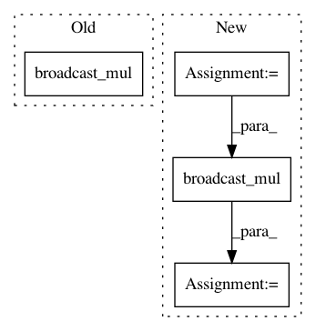

fc3cea17d2a8caaded3319dca1b1ae46468a57c0,gluoncv/nn/coder.py,NormalizedBoxCenterDecoder,hybrid_forward,#NormalizedBoxCenterDecoder#Any#Any#Any#,135
Before Change
p = F.split(x, axis=-1, num_outputs=4)
ox = F.broadcast_add(F.broadcast_mul(p[0] * self._stds[0] + self._means[0], a[2]), a[0])
oy = F.broadcast_add(F.broadcast_mul(p[1] * self._stds[1] + self._means[1], a[3]), a[1])
ow = F.broadcast_mul(F.exp(p[2] * self._stds[2]) + self._means[2], a[2]) / 2
oh = F.broadcast_mul(F.exp(p[3] * self._stds[3]) + self._means[3], a[3]) / 2
return F.concat(ox - ow, oy - oh, ox + ow, oy + oh, dim=-1)
After Change
tw = F.exp(p[2] * self._stds[2] + self._means[2])
th = F.exp(p[3] * self._stds[3] + self._means[2])
if self._clip:
tw = F.minimum(tw, self._clip)
th = F.minimum(th, self._clip)
ow = F.broadcast_mul(tw, a[2]) / 2
oh = F.broadcast_mul(th, a[3]) / 2
return F.concat(ox - ow, oy - oh, ox + ow, oy + oh, dim=-1)
In pattern: SUPERPATTERN
Frequency: 3
Non-data size: 4
Instances
Project Name: dmlc/gluon-cv
Commit Name: fc3cea17d2a8caaded3319dca1b1ae46468a57c0
Time: 2018-07-20
Author: 13162287+ijkguo@users.noreply.github.com
File Name: gluoncv/nn/coder.py
Class Name: NormalizedBoxCenterDecoder
Method Name: hybrid_forward
Project Name: dmlc/gluon-cv
Commit Name: 49be01910a8e8424b017ed3df65c4928fc918c67
Time: 2018-10-10
Author: cheungchih@gmail.com
File Name: gluoncv/loss.py
Class Name: YOLOV3Loss
Method Name: hybrid_forward
Project Name: dmlc/gluon-cv
Commit Name: 447c8e87ea3b270d0b3404ad962032752cfbc0ab
Time: 2020-04-22
Author: zhangz6@cs.washington.edu
File Name: gluoncv/nn/splat.py
Class Name: SplitAttentionConv
Method Name: hybrid_forward